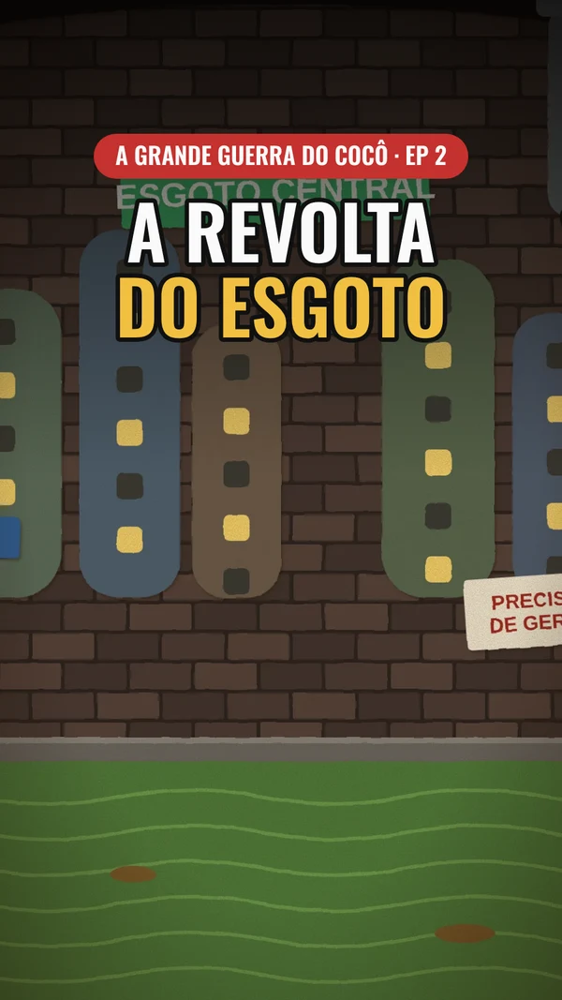
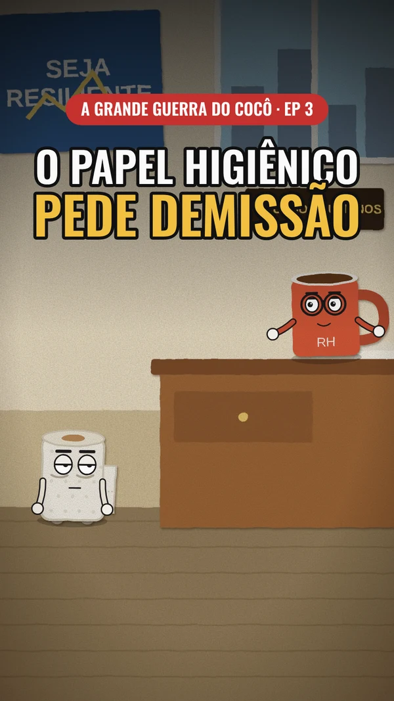
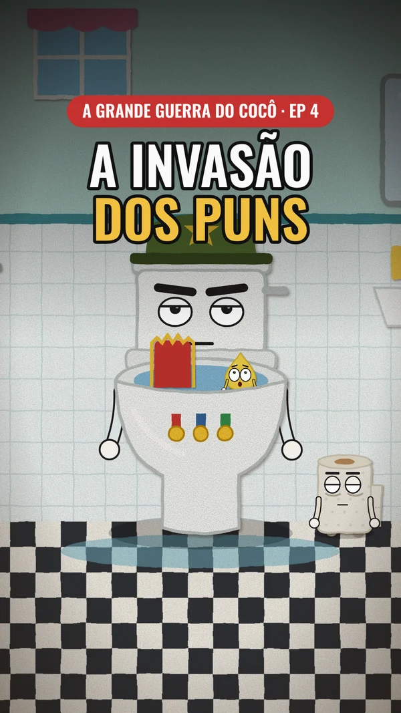
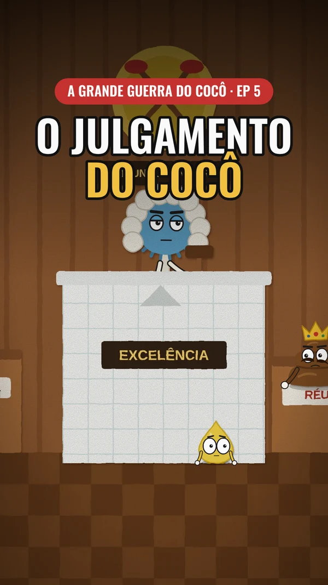

Episódios
 EP 1 · 1 MINO cocô que se recusou a descerTrês descargas, um advogado imaginário e o protocolo de desentupimento.
EP 1 · 1 MINO cocô que se recusou a descerTrês descargas, um advogado imaginário e o protocolo de desentupimento.
EP 2 · 1 MINA revolta do esgotoTonhão cai no esgoto, vira gerente e descobre que hoje é dia de limpeza.
EP 3 · 1 MINO papel higiênico pede demissãoCláudio vai a uma entrevista de emprego. A fábrica produz… adivinha.
EP 4 · 1 MINA invasão dos punsO Capitão Metano chega, se multiplica e vira franquia.
EP 5 · 1 MINO julgamento do cocôEntupimento, desobediência e excesso de autoestima. E chega o pai.
Elenco
- TonhãoCocô de coroa e bigode torto. Acredita que é uma autoridade mundial.
- PinguinhoGota de xixi. Entra em pânico por qualquer coisa.
- CláudioRolo de papel higiênico. Exausto e sarcástico.
- General DescargaPrivada militar. Resolve tudo puxando a descarga.